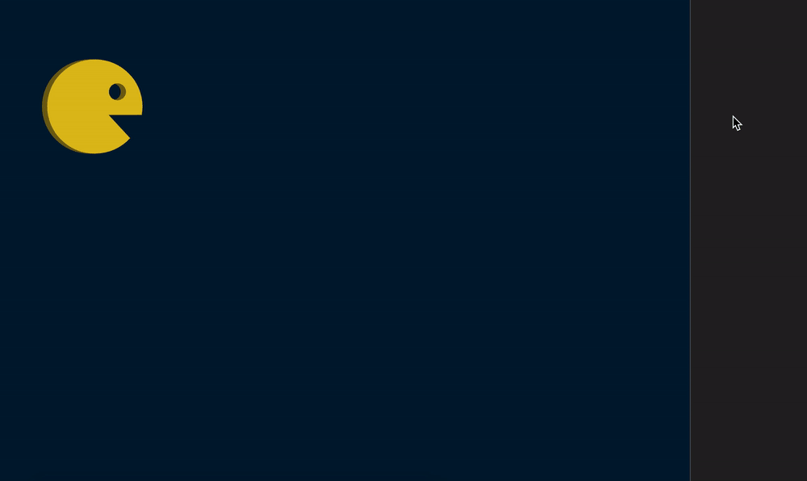
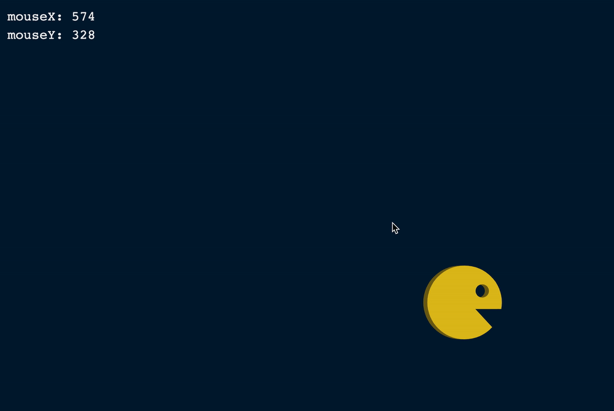
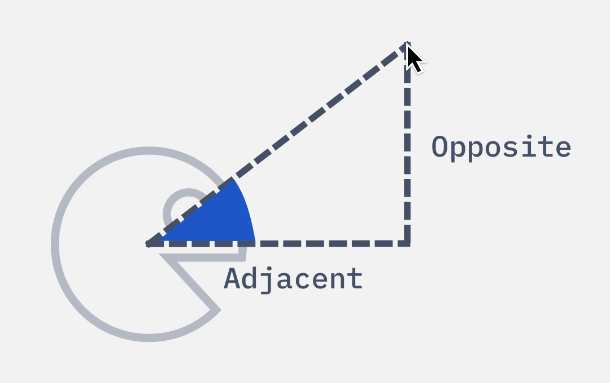
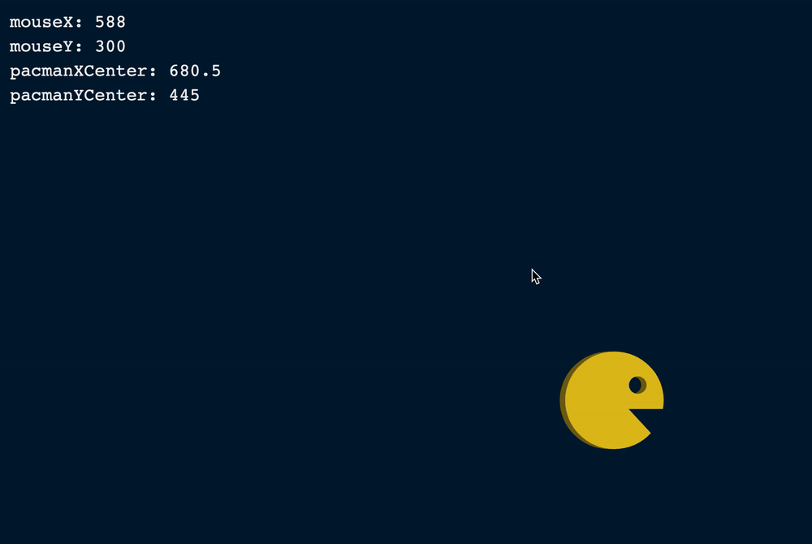
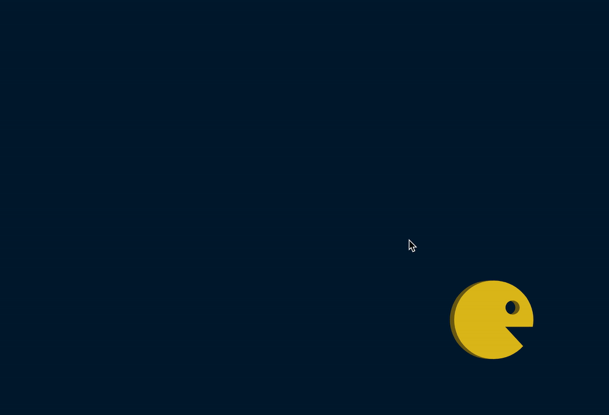
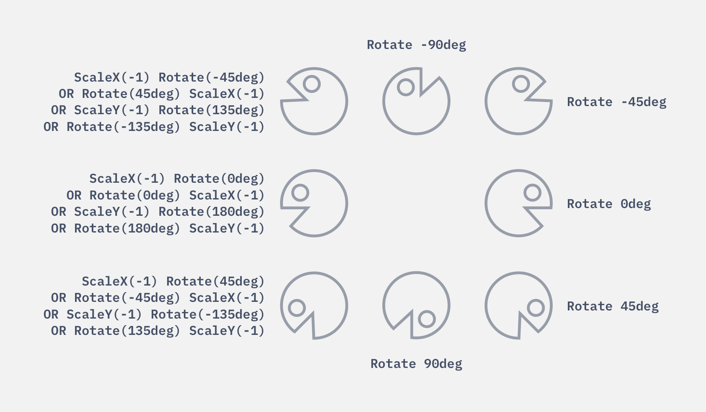
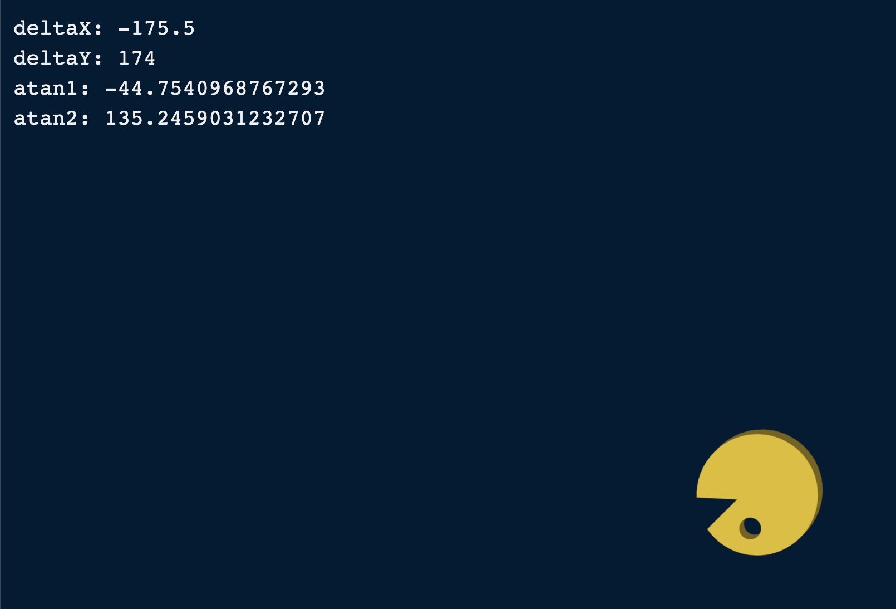
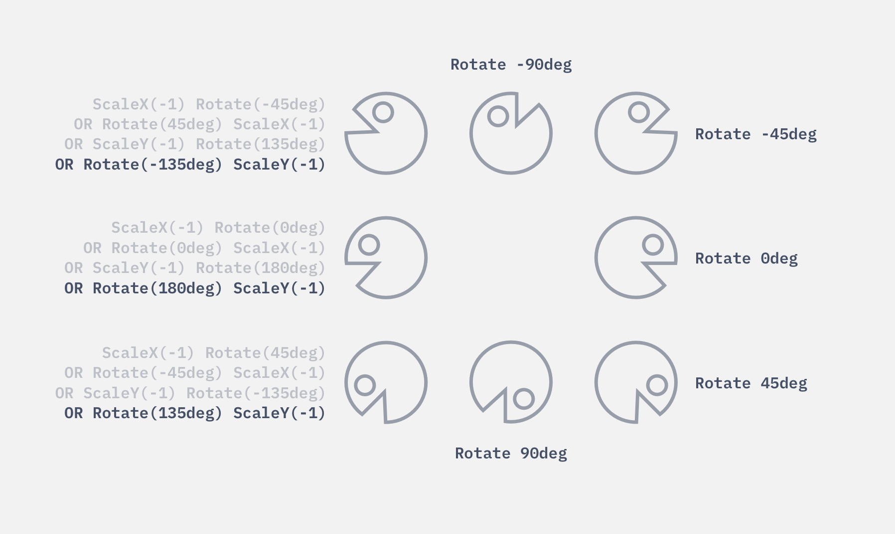
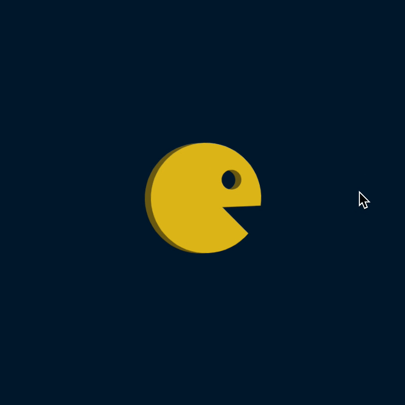
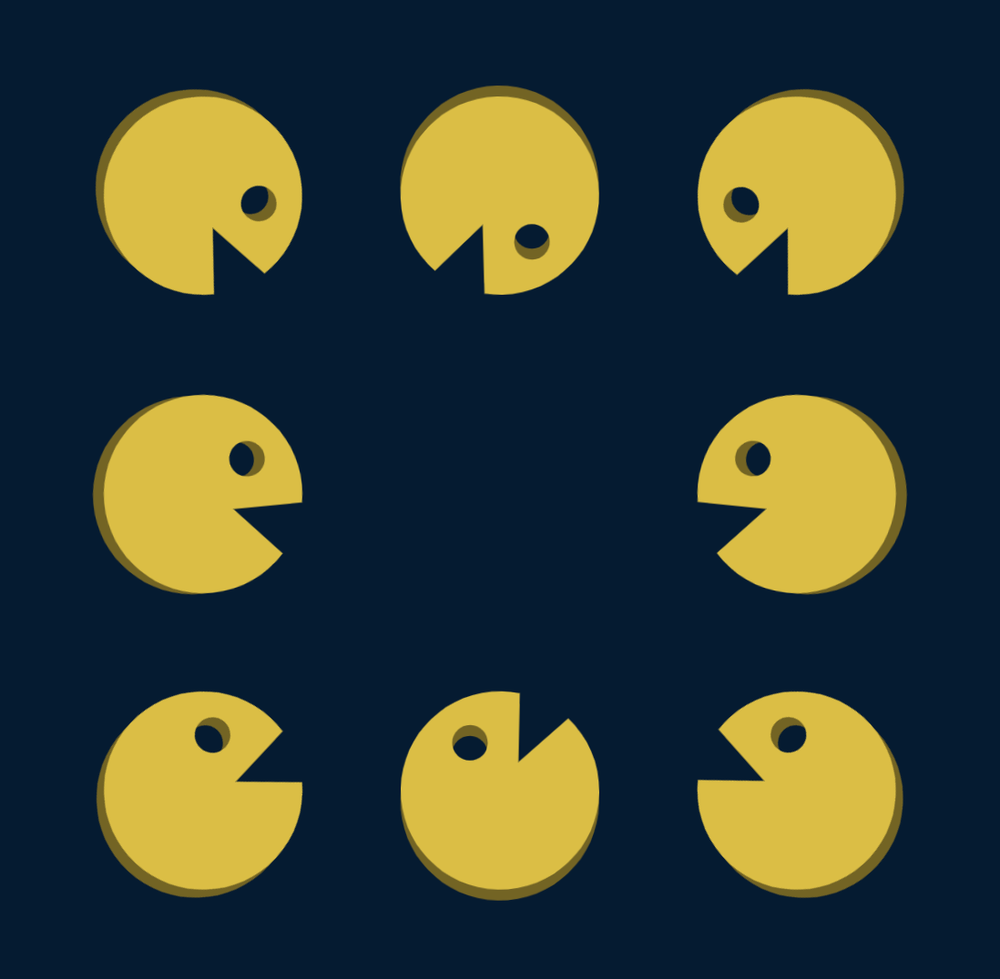

🛠️ Spinning Pacman: JavaScript
We want Pacman to follow the mouse. To do this, we need an event that triggers whenever the mouse moves. Here, we can use the mousemove event.
document.addEventListener('mousemove', event => {
// ...
})
We can find the mouse’s position with clientX and clientY.
document.addEventListener('mousemove', event => {
const mouseX = event.clientX
const mouseY = event.clientY
console.log(mouseX, mouseY)
})

It’s quite difficult to follow the mouse position via the console. Let’s write these positions into the DOM. You’ll find a <div> with a debug class in the HTML. We’ll display the mouse movement on this .debug element.
<div class="debug"></div>
const debug = document.querySelector('.debug')
document.addEventListener('mousemove', event => {
// ...
debug.innerHTML = `
<div> mouseX: ${mouseX} </div>
<div> mouseY: ${mouseY} </div>
`
})

Calculating the Angle
We can calculate the angle we need with Trigonometry (via Tangent).

We need to know the opposite and adjacent values to calculate the angle.
opposite: Difference between mouseY and Pacman’s vertical centeradjacent: Difference between mouseX and Pacman’s horizontal center
We can calculate Pacman’s vertical and horizontal center with values from getBoundingClientRect.
const debug = document.querySelector('.debug')
document.addEventListener('mousemove', event => {
// ...
const pacmanBox = pacman.getBoundingClientRect()
const pacmanXCenter = (pacmanBox.left + pacmanBox.right) / 2
const pacmanYCenter = (pacmanBox.top + pacmanBox.bottom) / 2
debug.innerHTML = `
<div> mouseX: ${mouseX} </div>
<div> mouseY: ${mouseY} </div>
<div> pacmanXCenter: ${pacmanXCenter} </div>
<div> pacmanYCenter: ${pacmanYCenter} </div>
`
})

opposite is the difference between the mouseY and pacmanYCenter. adjacent is the difference between mouseX and pacmanXCenter.
document.addEventListener('mousemove', event => {
// ...
const deltaX = mouseX - pacmanXCenter
const deltaY = mouseY - pacmanYCenter
debug.innerHTML = `
<div> deltaX: ${deltaX} </div>
<div> deltaY: ${deltaY} </div>
`
})
To calculate the angle, we can either use Math.atanMath.atan2
document.addEventListener('mousemove', event => {
// ...
const atan1 = Math.atan(deltaY / deltaX)
const atan2 = Math.atan2(deltaY, deltaX)
debug.innerHTML = `
<div> deltaX: ${deltaX} </div>
<div> deltaY: ${deltaY} </div>
<div> atan1: ${atan1} </div>
<div> atan2: ${atan2} </div>
`
})
I don’t know about you, but I’m much more comfortable with degrees (compared to radians). We can convert radians back to degrees with this formula: radian * 180 / Math.PI .
(In case you were wondering, I did not remember the formula by heart. I found it on MDN).
document.addEventListener('mousemove', event => {
// ...
const atan1 = Math.atan(deltaY / deltaX) * 180 / Math.PI
const atan2 = Math.atan2(deltaY, deltaX) * 180 / Math.PI
debug.innerHTML = `
<div> deltaX: ${deltaX} </div>
<div> deltaY: ${deltaY} </div>
<div> atan1: ${atan1} </div>
<div> atan2: ${atan2} </div>
`
})

Pay attention to atan1 and atan2 values when you move your mouse around the Pacman. You’ll notice this:
atan1 gives you values between 0deg and ±90degatan2 gives you values between 0deg and ±180deg
We can use either value to rotate the Pacman.
Rotating the Pacman
Let’s use the angle from atan2. We can rotate the Pacman by setting a rotate transform.
document.addEventListener('mousemove', event => {
// ...
const angle = Math.atan2(deltaY, deltaX) * 180 / Math.PI
pacman.style.transform = `rotate(${angle}deg)`
})
We positioned five directions (North, North-east, East, South-east, and South) correctly with this code. What’s next is to flip Pacman so it has the correct orientation in the other three directions.

Pay attention to the angle values. You’ll notice we have 135deg when the Pacman faces South-west.

This means we need to use the fourth formula in our transform chart.

document.addEventListener('mousemove', event => {
// ...
const angle = Math.atan2(deltaY, deltaX) * 180 / Math.PI
let transform = `rotate(${angle}deg)`
if (Math.abs(angle) > 90) transform += 'scaleY(-1)'
pacman.style.transform = transform
})

More Pacman!
Once we get a single Pacman to rotate properly, adding more Pacman is a simple feat. Go ahead and add more Pacman SVGs into the HTML. Use 8 for the best results.
<main>
<svg class="pacman"><use href="images/pacman.svg#pacman"></use></svg>
<svg class="pacman"><use href="images/pacman.svg#pacman"></use></svg>
<svg class="pacman"><use href="images/pacman.svg#pacman"></use></svg>
<!-- ...5 more pacman SVG... -->
</main>
In JavaScript, make sure you do two things:
Use querySelectorAll to select all the SVGs.
Make each Pacman follow the mouse with forEach.
const pacmen = [...document.querySelectorAll('.pacman')]
document.addEventListener('mousemove', event => {
const mouseX = event.clientX
const mouseY = event.clientY
pacmen.forEach(pacman => {
// ...
})
})

Finally, let’s spice up the page by adding a nice-looking header font! We’ll also remove .debug since we don’t need it anymore.
<body>
<header>
<h1>
<div data-spinning>Spinning</div>
<div data-pacman>Pacman</div>
</h1>
</header>
<main><!-- ... --></main>
<script src="js/main.js"></script>
</body>
Your browser doesn't support embedded videos. Watch the video here instead.
I played with the Spinning Pacman quite a bit after I made it. Here’s a video if you want to see what I made! (Turn the sound on for the music).